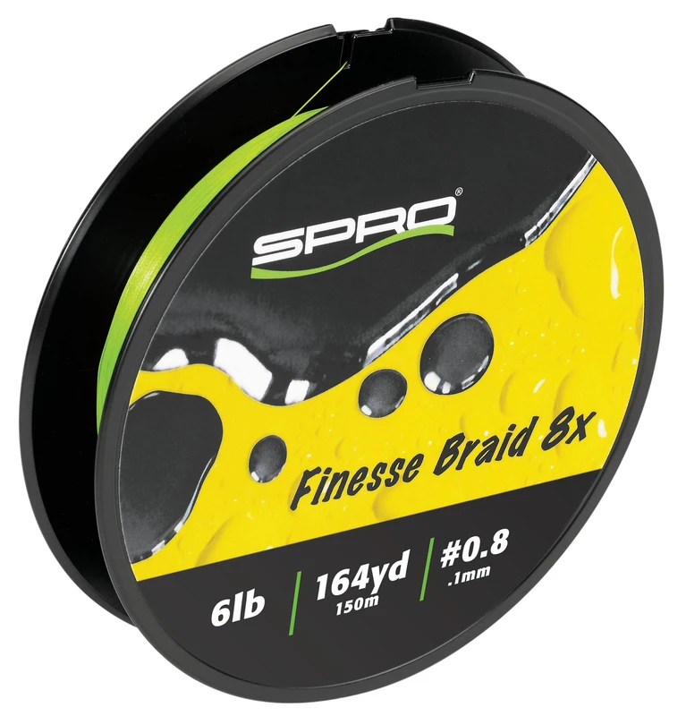

SPRO Finesse Braid 8X
Diameter chart, reel capacity & backing guide

Finesse Braid 8X is SPRO's eight-strand braid for light-line presentations. The 6-16 lb options covered here come in 150-meter packages, labeled 164 yards. Compare the selected diameter with your reel to plan a working braid section and any backing.
- Construction
- Japanese eight-strand braid, positioned by SPRO as soft and limp for finesse fishing
- Listed strengths
- 6-16 lb
- Line type
- Braid main line
Is Finesse Braid 8X right for your setup?
Finesse Braid 8X is SPRO's lighter braid option for finesse presentations, with a leader chosen separately for the rig. Its thin 6-16 lb sizes can leave substantial spare space on a spinning spool. Plan a useful working section and backing rather than filling entirely with braid, and choose strength for the hook, cover and fish you expect.
How much Finesse Braid 8X will fit?
Calculated estimates, not measured fills. Stop at the reel manufacturer's fill level even if some line remains.
SPRO Finesse Braid 8X diameter chart
Only the source-reviewed strengths and package combinations listed below are included. Converted measurements are identified in the source notes.
| Strength | Inches | mm | Spools (m / yd) |
|---|---|---|---|
| 0.003937 | 0.100 | 150 m (about 164 yd) | |
| 0.005118 | 0.130 | 150 m (about 164 yd) | |
| 0.006299 | 0.160 | 150 m (about 164 yd) | |
| 0.007087 | 0.180 | 150 m (about 164 yd) | |
| 0.007874 | 0.200 | 150 m (about 164 yd) | |
| 0.008661 | 0.220 | 150 m (about 164 yd) |
Choosing your Finesse Braid 8X strength
The package labels list 6 lb at 0.10 mm, 8 lb at 0.13 mm and 10 lb at 0.16 mm. These are printed physical diameters, not a PE-number conversion.
The 12, 14 and 16 lb options are 0.18, 0.20 and 0.22 mm. Match the rod and leader connection to the exact size instead of assuming all finesse braids share a diameter.
This 6-16 lb family is not Bronzeye Braid for heavy-cover frogging. A technique name is not a reason to stretch a light-line setup beyond the rod or drag requirements.
Specification-based guidance, not a ReelCalc hands-on performance test. Capacity results are estimates, not measured fills.
Want a guided recommendation?
Continue in the Setup WizardSame pound test, different diameters
At your selected strength
Loading diameter comparisons...
What changes with another line?
Nearby diameters in the line database
| Line | Strength | Inches | Difference |
|---|---|---|---|
| Loading line database... | |||
Backing, working line & leaders
Plan with the package label
Each verified Lime Green filler is 150 m, also labeled 164 yd. Select a working length within that supply and allow extra line for trimming and runs.
Give thin braid a secure base
Use the reel manufacturer's approved braid attachment and maintain firm, even tension. A thin line can fit in large quantities; unused volume can be occupied by sound backing.
Choose the leader separately
A short leader at the lure end can be replaced without replacing the whole braid fill. Its strength should suit the cover and presentation; it need not simply copy the braid pound label.
How Much Fits on These Reels?
Estimated full-spool capacity for the Finesse Braid 8X strength selected above, with no backing. These are calculated examples, not physical tests or recommendations for every pairing.
Loading capacity estimates...
Finesse Braid 8X questions, answered
Are these diameters inferred from PE sizes?
No. Each millimeter value was visually read from an official SPRO product-package image. Inches are explicitly converted from those millimeters.
Is a 150 m spool a 150-yard spool?
No. The manufacturer labels these packages 150 m and 164 yd. The original metric label is retained in the package evidence.
Does the chart verify both colors independently?
The numeric evidence is from Lime Green package labels. Flash Pink is confirmed as a separate 150 m product variant, but this pack does not silently merge its color-specific images into the Lime Green numeric evidence.
How much Finesse Braid 8X will fit my reel?
Use the exact strength and the reel's published capacity. Pound test is not a fixed diameter, so equal-strength products can produce different fill estimates.
Is one 164-yard package enough?
Only when it covers the planned working length and an appropriate reserve. Backing can fill unused volume, but cannot supply more working line for long casts, deep drops or fish runs.
Specifications & sources
Official sources retrieved September 13, 2026. Millimeter diameters are published; inches are converted by dividing by 25.4. Lime Green package labels visually reviewed for all six strengths. Only Lime Green packages are included in the numeric rows. Published 150 m / 164 yd package pair retained. Package options are not a stock or price guarantee.
Calculations use the catalog's listed inch diameters. Published inch and millimeter values may differ slightly because of rounding.
- Official SPRO specification source Exact numeric rows, package identity and model positioning.